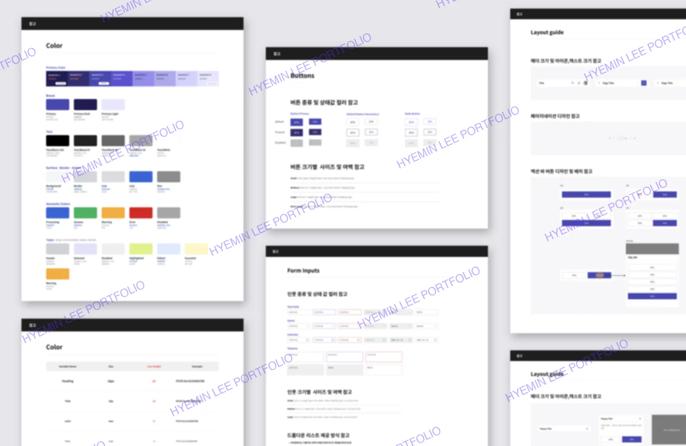

ENTERPRISEUI DESIGN
01 / PROJECT 2026
SK hynix FGS
ENTERPRISE SYSTEM UI
DESIGNPUBLISHING
수행 내용 보기 +
HDS 기준 UI 가이드와 공통 컴포넌트를 설계했습니다. 메뉴·버튼·Input·Modal부터 Layout·Spacing·Radius까지, 일관된 기업 시스템 UI를 위한 디자인 기준을 정리하고, 화면 퍼블리싱까지 수행했습니다.
Figma · UI Design · Design Guideline · Web Publishing